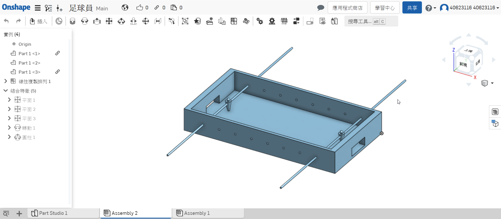

<!doctype html>
<html lang="en">
<head>
    <meta charset="utf-8">
<title>
2018 Fall 分組網際簡報
</title>
    <meta name="description" content="A framework for easily creating beautiful presentations using HTML">
    <meta name="author" content="Hakim El Hattab">
    
    <meta name="apple-mobile-web-app-capable" content="yes">
    <meta name="apple-mobile-web-app-status-bar-style" content="black-translucent">
    
    <meta name="viewport" content="width=device-width, initial-scale=1.0, maximum-scale=1.0, user-scalable=no">
    
    <link rel="stylesheet" href="css/reveal.css">
    <link rel="stylesheet" href="css/theme/black.css" id="theme">
    
    <!-- Theme used for syntax highlighting of code -->
    <link rel="stylesheet" href="lib/css/zenburn.css">

    <!-- Printing and PDF exports -->
    <script>
        var link = document.createElement( 'link' );
        link.rel = 'stylesheet';
        link.type = 'text/css';
        link.href = window.location.search.match( /print-pdf/gi ) ? 'css/print/pdf.css' : 'css/print/paper.css';
        document.getElementsByTagName( 'head' )[0].appendChild( link );
    </script>

    <!--[if lt IE 9]>
    <script src="lib/js/html5shiv.js"></script>
    <![endif]-->
</head>

<body>
<div class="reveal">
<!-- Any section element inside of this container is displayed as a slide -->
<div class="slides">
<section data-markdown>
    <script type="text/template">
## 2019Fall 分組協同產品設計40623116

### 虎科大機械設計工程系

[小組網站](https://mdekmol.github.io/cd2019a-task1-2019cda_t1_g1/content/index.html)
[小組倉儲](https://github.com/mdekmol/cd2019a-task1-2019cda_t1_g1)
[個人網站](https://mdecadp2018.github.io/site-40623116/content/%E5%8D%94%E5%90%8C%E7%94%A2%E5%93%81%E8%A8%AD%E8%A8%88.html)
[個人投影片](https://mdecadp2018.github.io/site-40623116/reveal/index.html#/)


    </script>
</section>


						
<section data-markdown>
    <script type="text/template">
## week10

### 虎科大機械設計工程系

開始分配手足球的工作，以及學習程式(請教第三組)

    </script>
</section>


						
<section data-markdown>
    <script type="text/template">
## week11繪製簡易球檯

[onshape](https://cad.onshape.com/documents/2d4e6f40d5c6e87b037075c2/w/935f73e23815e2819ea12f5e/e/b85b0468a4fe08cefcb12774)

### 
當初在寫程式時，因為球檯還沒繪製完，所以自行繪製了一個簡易版本


    </script>
</section>


						
<section data-markdown>
    <script type="text/template">
## week12

手足球雙人對打測試
<iframe width="560" height="315" src="https://www.youtube.com/embed/Czmc5rETVuQ" frameborder="0" allow="accelerometer; autoplay; encrypted-media; gyroscope; picture-in-picture" allowfullscreen></iframe>
# 參考自第三組及網路上的python ev3的寫法
    </script>
</section>


						
<section data-markdown>
    <script type="text/template">
## week13

手足球單人對電腦
<iframe width="560" height="315" src="https://www.youtube.com/embed/aXtKOC15TXI" frameborder="0" allow="accelerometer; autoplay; encrypted-media; gyroscope; picture-in-picture" allowfullscreen></iframe>
# 回擊程式是讓桿子抓取球的位置來寫的

    </script>
</section>


						
<section data-markdown>
    <script type="text/template">
## week14

手足球電腦對電腦
<iframe width="560" height="315" src="https://www.youtube.com/embed/ouVWM-XYCi4" frameborder="0" allow="accelerometer; autoplay; encrypted-media; gyroscope; picture-in-picture" allowfullscreen></iframe>
# 電腦回擊有點延遲必須做修改

    </script>
</section>


						
<section>
<section data-markdown>
    <script type="text/template">
<!-- 請注意, @others 不可以內縮 -->
程式修改簡短(雙人對打)

<iframe width="560" height="315" src="https://www.youtube.com/embed/yKlaM3ONPdU" frameborder="0" allow="accelerometer; autoplay; encrypted-media; gyroscope; picture-in-picture" allowfullscreen></iframe>


						
    </script>
</section>

<section data-markdown>
    <script type="text/template">
<!-- 請注意, @others 不可以內縮 -->
程式修改簡短(單人對打電腦)

<iframe width="560" height="315" src="https://www.youtube.com/embed/AE9rLeqkIlc" frameborder="0" allow="accelerometer; autoplay; encrypted-media; gyroscope; picture-in-picture" allowfullscreen></iframe>

						
    </script>
</section>

<section data-markdown>
    <script type="text/template">
<!-- 請注意, @others 不可以內縮 -->
程式修改簡短(電腦對打電腦)

<iframe width="560" height="315" src="https://www.youtube.com/embed/L2WIItHtdpo" frameborder="0" allow="accelerometer; autoplay; encrypted-media; gyroscope; picture-in-picture" allowfullscreen></iframe>

    </script>
</section>

</section>

						
<section data-markdown>
    <script type="text/template">
## week16

加入送球機構後的模擬
<iframe width="560" height="315" src="https://www.youtube.com/embed/_fmiNbCI618" frameborder="0" allow="accelerometer; autoplay; encrypted-media; gyroscope; picture-in-picture" allowfullscreen></iframe>


    </script>
</section>


						
<section data-markdown>
    <script type="text/template">
## 總結

加入所有桿子後，程式必須做修改但還沒研究出來，程式是請教第三組，然後別組才來請教我的，對於python也懂了一點，但還是基本的而已，需要再多加研究。
    </script>
</section>


						
<section data-markdown>
    <script type="text/template">
## 倉儲推送紀錄

[cd2019a-task1-2019cda_t1_g1](https://github.com/mdekmol/cd2019a-task1-2019cda_t1_g1/graphs/contributors)

    </script>
</section>


						
<section data-markdown>
    <script type="text/template">
## 自評

學員出席(20%) 20分

Github 倉儲管理(20%) 13分

Onshape 協同操作(20%) 12分

V-rep 模擬(20%) 15分

程式開發(20%) 10分

總分:70分

    </script>
</section>


						
<section data-markdown>
    <script type="text/template">
# 投影片快捷鍵

* 利用箭頭上下前後換頁
* 按 f 鍵進入全螢幕模式 (full screen)
* 按 s 鍵可以顯示投影片筆記 (show)
* 按 o 鍵可以切換單張或全域檢視 (overview)
* 按 b 或 . 鍵可以切換螢幕黑屏 (black)
* 按 Esc 可以退出全螢幕或全域檢視 (Escape)

    </script>
</section>


						
<section>
<section data-markdown>
    <script type="text/template">
<!-- 請注意, @others 不可以內縮 -->
# 數學符號與方程式

Inline math equations go in like so: $\omega = d\phi / dt$. Display
math should get its own line and be put in in double-dollarsigns:

$$I = \int \rho R^{2} dV$$
    </script>
</section>


						
<section data-markdown>
    <script type="text/template">
<!-- 請注意, @others 不可以內縮 -->
## 利用 Markdown 寫投影片
以下利用 Markdown 格式展示 Python 程式碼:
```
# use threading and subprocess to threading the make process
import os
import subprocess
import threading

def domake():
    
    path = "../exposed/api/exposed"
    ubuntu = "../Ubuntu"
    
    # create obj path
    
    if not os.path.exists(path+"/../obj"):
        os.makedirs(path+"/../obj")
    
    subprocess.call(["make", "clean"], cwd=path)
    subprocess.call("make", cwd=path)
    subprocess.call(["cp", "{libslvs.so, _slvs.so, slvs.py}", ubuntu], cwd=path)
    subprocess.call(["python3", "circle_ex.py"], cwd=path+"/"+ubuntu)
    
make = threading.Thread(target=domake)
make.start()
```
    </script>
</section>


						
<section data-markdown>
    <script type="text/template">
## 使用 iframe 導入影片

### 導入影片 template

<iframe src="https://player.vimeo.com/video/183950627" width="640" height="492" frameborder="0" webkitallowfullscreen mozallowfullscreen allowfullscreen></iframe>
    </script>
</section>


						
</section>

</div>

</div>

<script src="lib/js/head.min.js"></script>
<script src="js/reveal.js"></script>
<script>
        // More info https://github.com/hakimel/reveal.js#configuration
        Reveal.initialize({
            controls: true,
            progress: true,
            history: true,
            center: true,

            transition: 'slide', // none/fade/slide/convex/concave/zoom

            // More info https://github.com/hakimel/reveal.js#dependencies
            dependencies: [
                { src: 'lib/js/classList.js', condition: function() { return !document.body.classList; } },
                { src: 'plugin/markdown/marked.js', condition: function() { return !!document.querySelector( '[data-markdown]' ); } },
                { src: 'plugin/markdown/markdown.js', condition: function() { return !!document.querySelector( '[data-markdown]' ); } },
                { src: 'plugin/highlight/highlight.js', async: true, callback: function() { hljs.initHighlightingOnLoad(); } },
                { src: 'plugin/zoom-js/zoom.js', async: true },
                { src: 'plugin/notes/notes.js', async: true },
                { src: 'plugin/math/math.js', async: true }
            ]
        });
</script>
</body>

</html>

